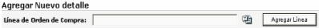
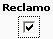

Este proceso permite realizar la devolución de mercadería al proveedor en aquellas ocasiones que esta ha sido previamente registrada. Esta devolución se realiza con el fin de eliminar existencias del inventario e iniciar un proceso de reclamo al proveedor por la mercadería devuelta por múltiples circunstancias.
Una vez que se tiene la información de la mercadería que se va a devolver se procede a llenar el encabezado de la devolución:
Orden: seleccionar la orden de compra que se asocia a dicha devolución. Se desplegarán solo aquellas que se hayan aplicado en la recepción
Número: número del documento.
Fecha: de creación del documento.
Recepción: fecha en que se devuelve la mercadería.
Referencia: un número de referencia para asociar la información.
Tran CxP: transacción a generar en el módulo de cuentas por pagar (factura, nota de débito, nota de crédito, etc.)
C. Funcional: de cual centro se va retirar la mercadería o,
Almacén: donde va a retirar la mercadería.
Luego de creado el encabezado, el sistema automáticamente trae las líneas de detalle de la orden de compra seleccionada en el encabezado, que no hayan generado un reclamo.

También le permite agregar nuevas líneas de detalle, de otras órdenes de compra:

 Permite ver y modificar
las observaciones que tenga la línea de detalle.
Permite ver y modificar
las observaciones que tenga la línea de detalle.
Elimina la línea de detalle.

Si este check esta marcado en alguna (s) línea (s) del detalle, se generará (n) registros en la opción Trabajar con Reclamos que se explicará más adelante.
El proceso de aplicación de un Documento de Devolución consiste en actualizar el saldo de una orden de compra. Por ejemplo, una orden requiere 50 máquinas industriales, se recibieron las 50 máquinas, pero hay que devolver 5 porque llegaron dañadas, entonces el nuevo saldo de la orden va hacer 5 máquinas, por lo que la orden queda como pendiente de surtir por el nuevo saldo. Además hace la eliminación de existencias del inventario.